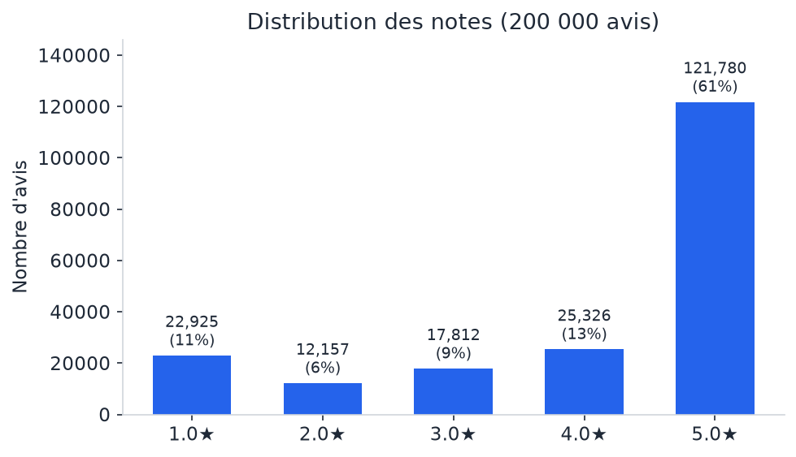
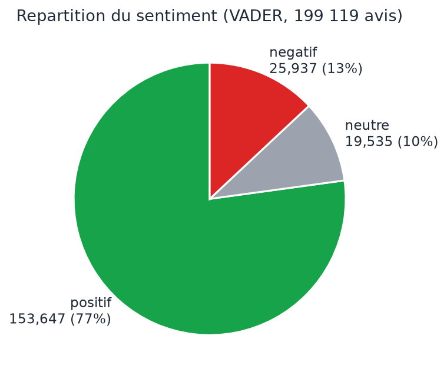
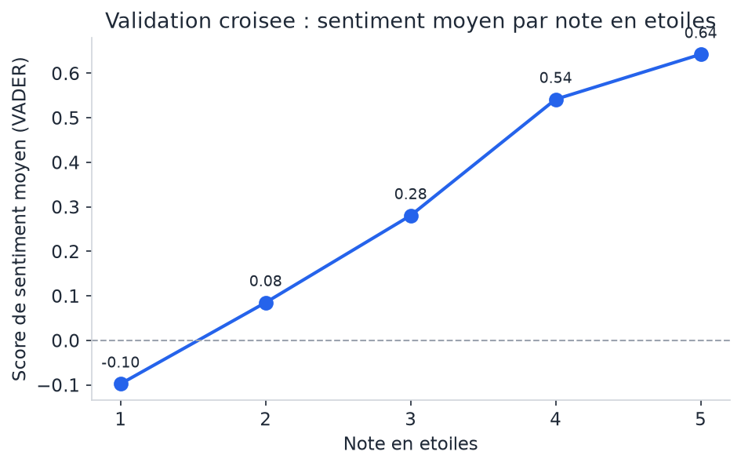
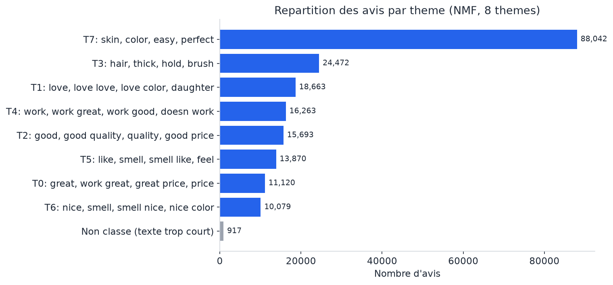
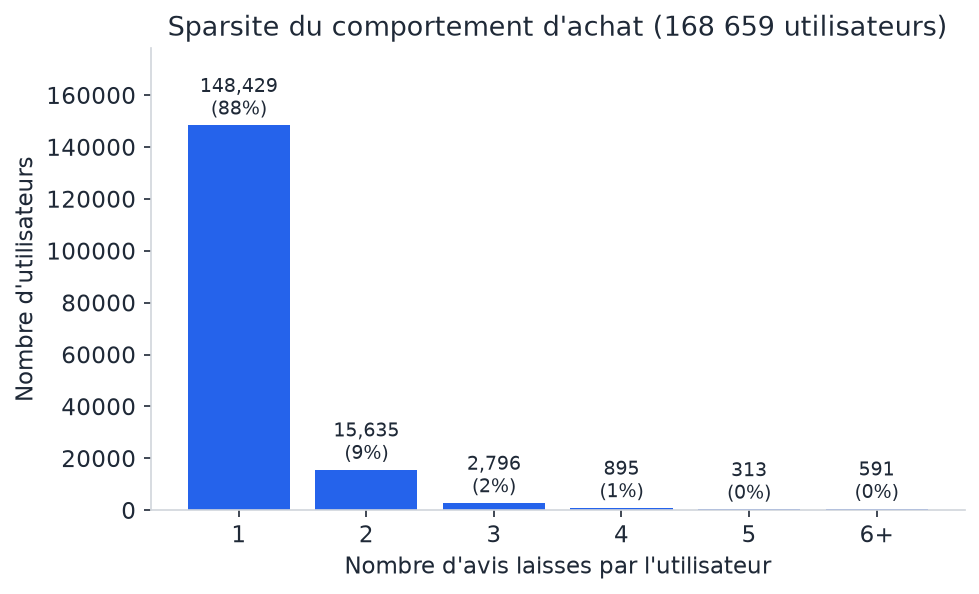
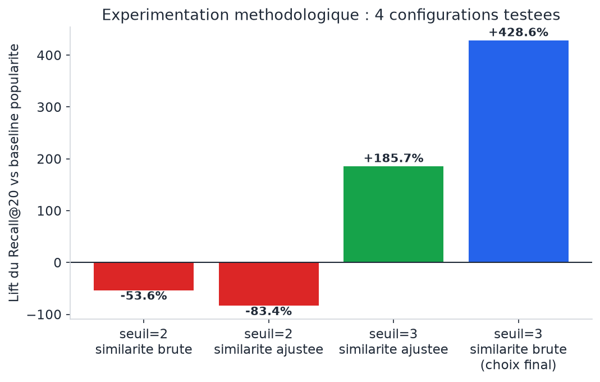
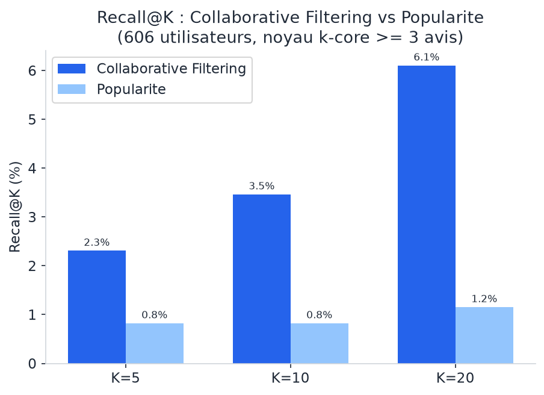
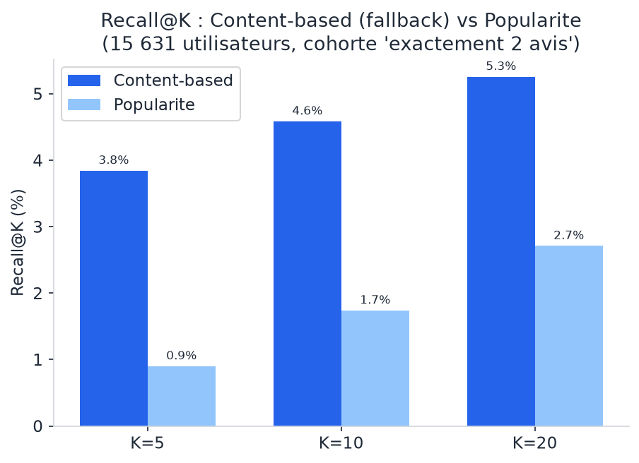
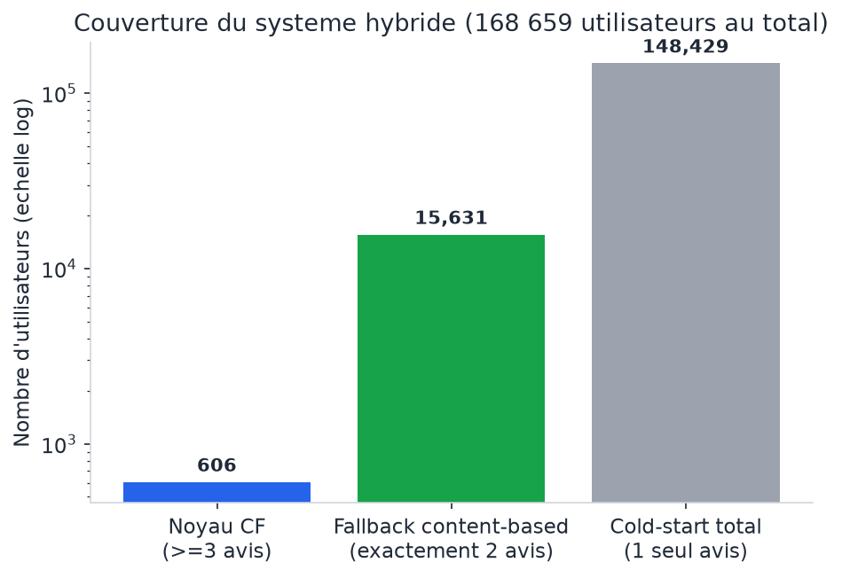

Pipeline data science de bout en bout sur 200 000 avis Amazon (catégorie "All Beauty") : moteur de recommandation hybride (collaborative filtering + content-based) et analyse NLP des avis clients (sentiment, thèmes), restitués dans un dashboard Streamlit End-to-end data science pipeline across 200,000 Amazon reviews ("All Beauty" category): hybrid recommendation engine (collaborative filtering + content-based) and NLP analysis of customer reviews (sentiment, topics), delivered through a Streamlit dashboard
Voir la documentation complète (PDF) View Full Documentation (PDF)
Un e-commerçant reçoit des milliers d'avis clients (note + texte libre) sur son catalogue produit. Deux besoins concrets, à partir de la même source de données brute : personnaliser les recommandations plutôt que d'afficher les mêmes produits populaires à tout le monde (Marketing / Growth), et comprendre le sentiment et les thèmes récurrents des avis sans avoir à tous les lire (Qualité / Produit). J'ai construit ce pipeline de bout en bout sur un catalogue e-commerce réel : 200 000 avis Amazon Reviews 2023 (catégorie All Beauty), streamés directement depuis Hugging Face. An e-commerce retailer receives thousands of customer reviews (rating + free text) on its product catalog. Two concrete needs, from the same raw data source: personalizing recommendations instead of showing the same popular products to everyone (Marketing / Growth), and understanding sentiment and recurring themes in reviews without reading them all (Quality / Product). I built this pipeline end to end on a real e-commerce catalog: 200,000 reviews from Amazon Reviews 2023 (All Beauty category), streamed directly from Hugging Face.

Distribution des notes — 61% des avis sont notés 5★, un biais classique en e-commerce Rating distribution — 61% of reviews are rated 5★, a classic e-commerce bias
Nettoyage (HTML/URLs, doublons), tokenisation et lemmatisation spaCy, puis deux analyses complémentaires sur le texte libre des avis : sentiment (VADER) et thèmes récurrents (NMF sur TF-IDF). Cleaning (HTML/URLs, duplicates), spaCy tokenization and lemmatization, then two complementary analyses on the reviews' free text: sentiment (VADER) and recurring themes (NMF on TF-IDF).




Sparsité du comportement d'achat — 88% des utilisateurs n'ont laissé qu'un seul avis, hors de portée du CF classique Purchase-behavior sparsity — 88% of users left only one review, out of reach for classic CF
La matrice utilisateur-produit brute est extrêmement sparse : la grande majorité des clients n'achètent/notent qu'une seule fois dans cette catégorie. Deux modules complémentaires couvrent l'ensemble du spectre client, de l'utilisateur actif au tout nouveau client. The raw user-item matrix is extremely sparse: the vast majority of customers only buy/review once in this category. Two complementary modules cover the full customer spectrum, from active users to brand-new ones.

Démarche notable : une hypothèse initiale (similarité ajustée pour corriger le biais des notes 5★) a été testée puis rejetée — la vraie cause racine était un seuil k-core trop bas, pas le biais de notation Notable process: an initial hypothesis (similarity adjusted to correct the 5★ rating bias) was tested then rejected — the real root cause was too low a k-core threshold, not the rating bias
Deux comparaisons Precision@K / Recall@K (K = 5/10/20) contre une baseline "produits les plus populaires", chacune évaluée sur la cohorte pertinente pour le modèle testé. Two Precision@K / Recall@K comparisons (K = 5/10/20) against a "most popular products" baseline, each evaluated on the cohort relevant to the tested model.

= 3 avis" loading="lazy">

Application Streamlit à 4 onglets, lisant exclusivement la base SQLite précalculée par le pipeline — aucun calcul lourd côté dashboard. 4-tab Streamlit app, reading exclusively from the SQLite database precomputed by the pipeline — no heavy computation on the dashboard side.
SQL → Python → NLP → Recommendation → Evaluation → Dashboard — pipeline
reproductible, scripts src/ numérotés par étape, base SQLite unique régénérée
localement.
SQL → Python → NLP → Recommendation → Evaluation → Dashboard —
reproducible pipeline, src/ scripts numbered by stage, single SQLite database regenerated
locally.
 Hugging Face
Datasets
Hugging Face
Datasets NLTK / VADER
NLTK / VADER Scikit-learn
Scikit-learn
 Streamlit
Streamlit
 Plotly
PlotlyCollaborative filtering à +429% de lift @20 vs popularité sur le noyau d'utilisateurs actifs. Collaborative filtering delivers a +429% lift @20 vs. popularity on the active-user segment.
Fallback content-based couvrant 15 631 utilisateurs supplémentaires (+326% de lift @5), dès un seul avis positif. Content-based fallback covering 15,631 additional users (+326% lift @5), from a single positive review.
200 000 avis analysés automatiquement (sentiment + 8 thèmes), sans lecture manuelle, restitués dans un dashboard Streamlit. 200,000 reviews automatically analyzed (sentiment + 8 topics), no manual reading required, delivered through a Streamlit dashboard.